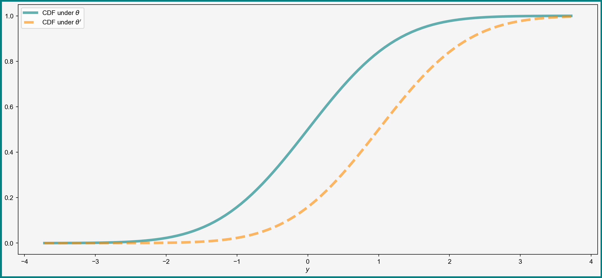
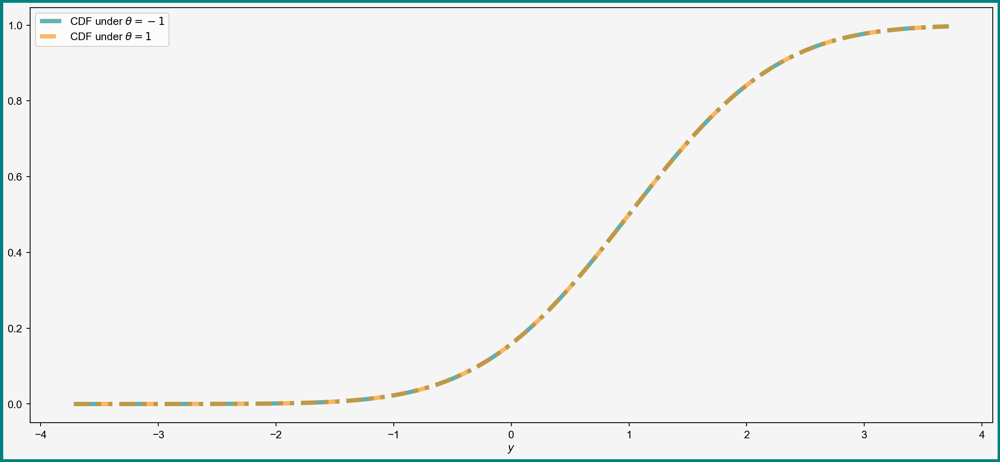

Identification, Estimation and Inference
The Three Parts of Statistics
Vladislav Morozov
Introduction
Lecture Info
Learning Outcomes
This lecture is about the basics of identification, estimation, and inference
By the end, you should be able to
- Understand the difference between identification, estimation, and inference
- Provide a working definition of identification
- Discuss identification in fully parametric models and the linear model under exogeneity
References
Identification and Inference
Overall Goal
Goal of all of statistics:
“Say something” about a “parameter” of interest “based on data”
Which “parameter”? What is “something”? How much “data”?
Parameters of Interest
Which parameter you want depends on the context:
- Causal settings:
- Treatment effects: averages, variances, …
- Features of structural economic models: elasticities, multipliers, …
- Prediction:
- Forecast of GDP, …
- Whether the patient has a disease …
Kind of Questions
What about the “something”?
Three example questions:
- Can the parameter be learned at all?
- If we have an estimate, how sure are we about it?
- Does the parameter satisfy some constraints? (equal to 0, positive, etc.)
Identification and Inference
All possible questions can be split into two classes of work:
- Identification: what could we learn if we had an infinite amount of data?
- Estimation and inference: how to “learn” from finite samples?
Both equally important in causal settings. Identification less/not important in prediction
Identification
General Idea
Parameter Label
Focus first on identification
Let \(\theta\) be the “parameter of interest” — something unknown you care about, e.g.
- Average treatment effect
- Coefficient vector
- Even an unknown function
Population Distribution \(F_{X, Y}\)
Suppose that our data are observations on \((X, Y)\)
How to express the idea of having “infinite data”?
Infinite data = knowing the joint distribution function \(F_{X, Y}\)
Models and Parameters Imply Distributions of Data

Path from parameter \(\theta\) to restrictions/implications on the data distribution
The model specifies parts of the data generating mechanism:
- Parts of \(F_{X, Y}\) might be unknown even if you know \(\theta\)
- Example: linear model with exogeneity — \(\E[Y_i|\bX_i]\) is linear in \(\bX_i\). Does not much about the distribution of \(\bX_i\) or \(Y_i\) beyond that
Definition of Identification
Identification basically asks:
Given the
- The joint distribution \(F_{X, Y}\) of the data
- Assumptions that the model is true for some \(\theta_0\)
- “Implications”\((\theta_0)\) of the model,
can \(\theta_0\) be uniquely determined?
Sometimes called point identification
Parametric Models
Fully Parametric Case: Intro
May sound a bit vague
To make idea simpler, a special parametric case
- Model fully determines the distribution of the data up \(\theta\)
- If you know \(\theta\), you know distribution of the data
Example
Consider a simple example:
- Model: \(Y_i\sim N(\theta_0, 1)\), no \(X_i\)
- Parameter of interest is \(\theta_0\)
Implication of the model:
- \(F_{Y}\) is a normal distribution with mean \(\theta_0\) and variance 1
- Known up to \(\theta\), can label the distribution as \(F_Y(y|\theta)\)
Identification of \(\theta\)
Let’s try our definition of identification:
- Distribution of the data tells us \(\E[Y_i]\)
- The model tells us that \(\E[Y_i]\) must be \(\theta_0\)
Therefore, it must be that \[ \theta_0 = \E[Y_i] \] \(\theta_0\) uniquely determined as the above function of the distribution of the data
Another View of Identification
Equivalent way to state definition of identification\(\theta_0\) is identified if for any \(\theta\neq\theta_0\) it holds that \[ F_Y(y|\theta) \neq F_Y(y|\theta_0) \]
In words: different \(\theta\) give different distributions of observed data
Visual Example: Difference in Distributions
Example of Non-Identification
Second definition useful for showing non-identification
An example: suppose that \(Y_i \sim N(\abs{\theta_0}, 1)\):
- If \(\theta = 1\), then \(Y_i\) should be \(N(1, 1)\)
- If \(\theta = -1\), then \(Y_i\) should also be \(N(1, 1)\)
Different \(\theta\) give the same distribution = \(\theta_0\) not identified if \(\theta_0\neq 0\)
Visual Illustration: Same Distribution

Identification in Linear Model with Exogeneity
Towards a More Complex Example
Previous example — a bit simplistic
- No causal framework
- Everything is determined by \(\theta\)
Let’s try a more useful case — a linear causal model
Setting: Potential Outcomes
Need a causal framework to talk about causal effects!
Work in the familiar potential outcomes framework:
- Unit \(i\) has some unobserved characteristic \(U_i\)
- There is some “treatment” \(\bX_i\) (discrete or continuous)
- For each possible value \(\bx\) of \(\bX_i\) the outcome of \(i\) would be \[ Y^{\bx}_i = \bx'\bbeta + U_i \]
- Units are identically distributed
Family of Potential Outcomes and Observed Data
Together potential outcomes form a family \(\curl{Y^{\bx}_i}_{\bx}\)
What we see: realized values of \((Y_i, \bX_i)\). The realized outcomes are determined as \[ Y_i = Y^{\bX_i}_i \]
All other potential outcomes remain counterfactual
SUTVA
In this class we will assume:
Potential outcomes of unit \(i\) depend only on the treatment of unit \(i\)
Called the stable unit treatment value assumption (SUTVA) — no interference, no general equilibrium effects, etc.
Causal Effects and Parameter of Interest
Model: \[ Y^{\bx}_i = \bx'\bbeta + U_i \] Note: \(U_i\) does not depend on \(\bx\)
Causal effect of changing unit \(i\) from \(\bx_1\) to \(\bx_2\) given by \((\bx_1-\bx_2)'\bbeta\). Thus:
Sufficient to learn \(\bbeta\)
Model Is Not Fully Parametric
Our assumptions do not fully specify
- Distribution of \(\bX_i\)
- Distribution of \(U_i\)
To identify those, we need \(F_{\bX, Y}\) and (for distribution of \(U_i\)) also \(\bbeta\)
Identifying \(\bbeta\)
Proposition 1 Let
- \(\E[\bX_i\bX_i']\) be invertible
- \(\E[\bX_iU_i]=0\)
Then \(\bbeta\) is identified as \[ \bbeta = \E[\bX_i\bX_i']^{-1}\E[\bX_iY_i] \]
Proof by considering \(\E[\bX_iY_i]\)
Discussion
Two key assumptions:
- Invertibility of \(\E[\bX_i\bX_i']\) is a variability condition (why?)
- \(\E[\bX_iU_i]=0\) is an exogeneity condition
Together:
- Identification strategy means a collection of assumptions that yield identification
- Proposition 1 — example of constructive identification: expressing \(\bbeta\) as a function of \(F_{\bX, Y}\)
Broader Identification Discussion
Identification — fundamentally theoretical exercise, always rests on assumptions
Some other approaches:
- Sometimes only non-constructive identification known
- Wooldridge (2020) defines \(\theta\) to be identified if it can be identified consistently — useful for showing identification of the limit
Estimation and Inference
Estimators and Goal of Estimation
Let \(\theta\) be a parameter of interest and \((X_1, \dots, X_N)\) be the available data — the sample
Definition 1 Let \(\theta\) belong to some space \(\S\). An estimator \(\hat{\theta}_N\) is a function from \((X_1, \dots, X_N)\) to \(\S\): \[ \hat{\theta}_N = g(X_1, \dots, X_n) \]
- Anything you can compute on the data is an estimator
- Try to find estimators with good properties
Inference
Inference is about answering questions about the population based on the finite sample
Example questions:
- How sure are we that \(\hat{\theta}_N\) is close to \(\theta\)?
- Does \(\theta\) satisfy some constraints (equal to 0, positive, etc)?
- Do our identification assumptions hold? (e.g. is \(\E[\bx_i\bx_i']\) invertible?)
Relevant both in causal and predictive settings
Recap and Conclusions
Recap
In this lecture we
- Discussed the difference between identification, estimation, and inference
- Saw definitions of identification
- Reviewed potential outcomes
- Discussed identification in the linear model under exogeneity
Next Questions
- Linear model: inference on \(\bbeta\) based on the OLS estimator
- Quantifying uncertainty
- Hypothesis testing
- Identification in various settings: IV, panel, nonlinear, etc.
References
Cunningham, Scott. 2021. Causal Inference: The Mixtape. Yale University Press. https://doi.org/10.2307/j.ctv1c29t27.
Hansen, Bruce. 2022. Econometrics. Princeton_University_Press.
Huntington-Klein, Nick. 2025. The Effect: An Introduction to Research Design and Causality. S.l.: Chapman and Hall/CRC.
Lewbel, Arthur. 2019. “The Identification Zoo: Meanings of Identification in Econometrics.” Journal of Economic Literature 57 (4): 835–903. https://doi.org/10.1257/jel.20181361.
Wooldridge, Jeffrey M. 2020. Introductory Econometrics: A Modern Approach. Seventh edition. Boston, MA: Cengage.
Identification, Estimation, and Inference